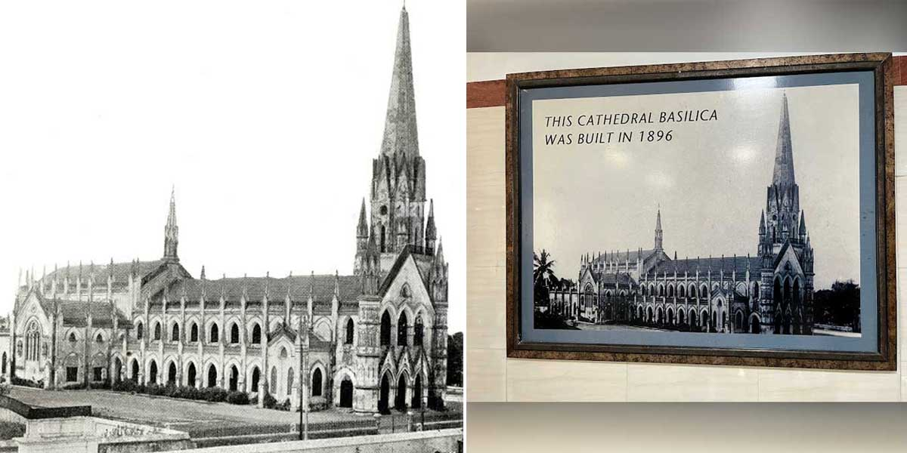
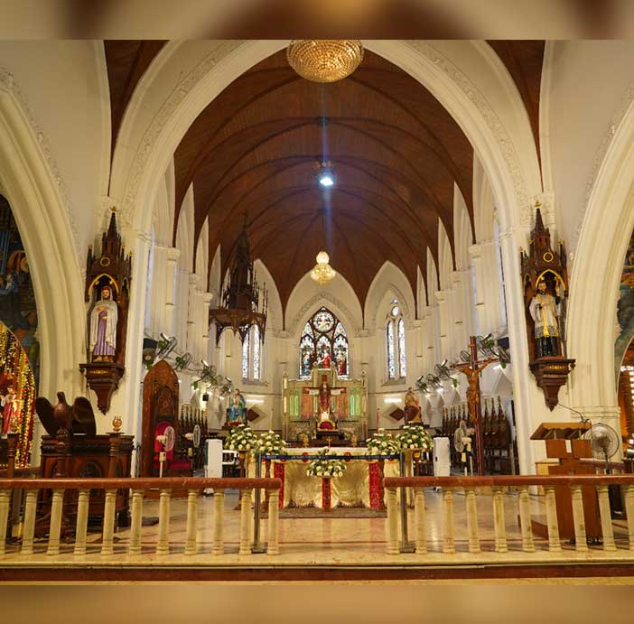
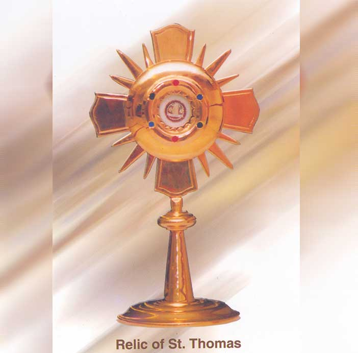
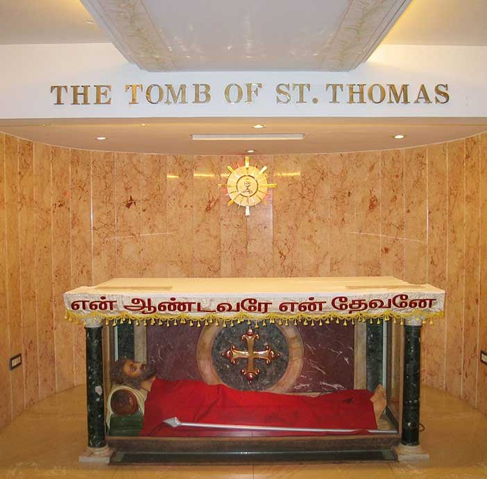
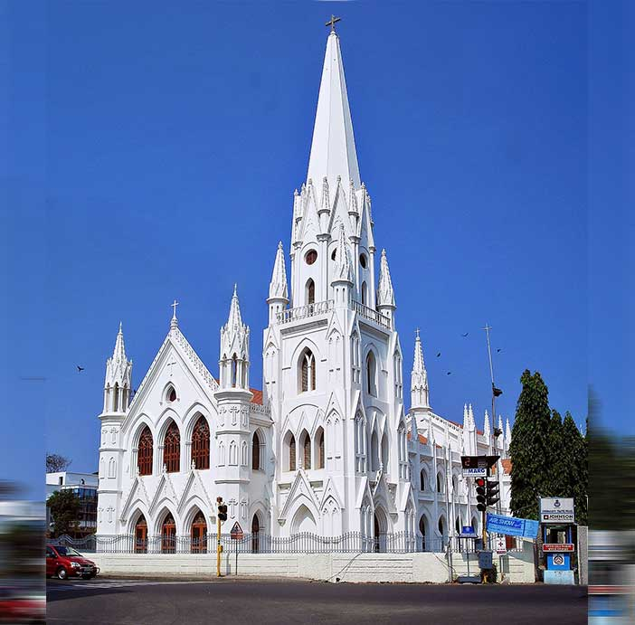
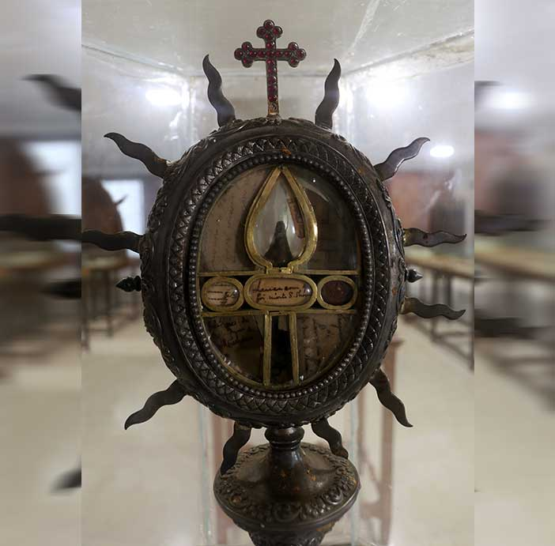
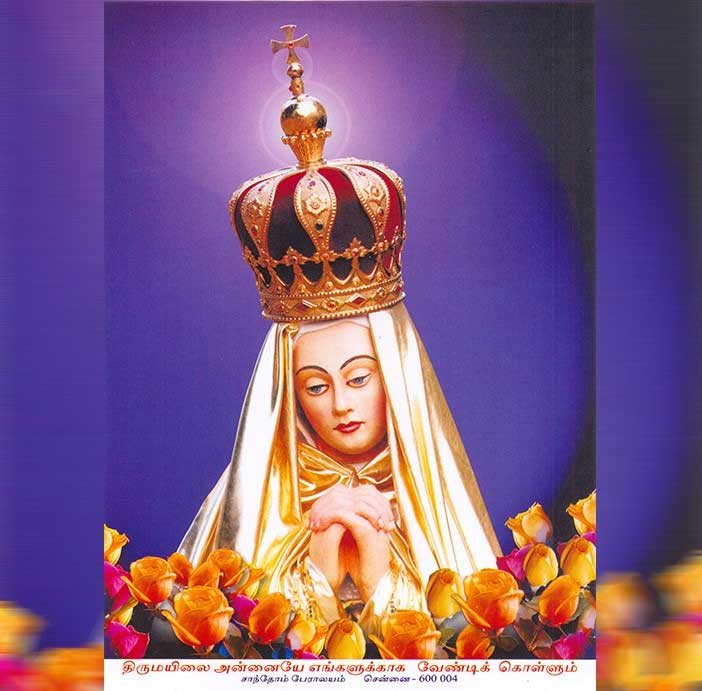
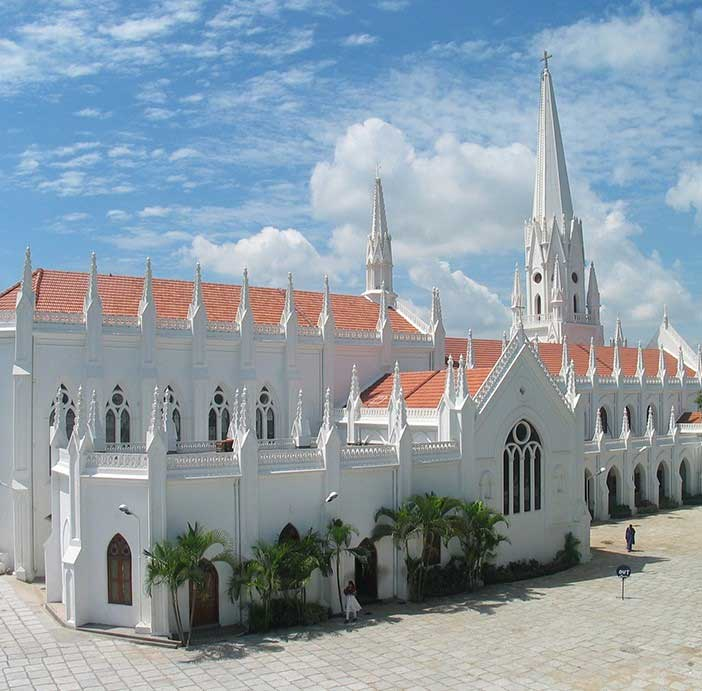

This is holy ground – one which contains the tomb of St. Thomas, one of the twelve Apostles (that is, closest associates) of Jesus Christ. He came to India in the year 52 AD, preached on the West Coast and Chennai(formerly Madras), died in this city in 72 AD, and was buried in Santhome. This Basilica that you are visiting, stands over his tomb. In fact, the Basilica is so constructed that the smaller of its two towers stands exactly over the tomb of St. Thomas.
This is also the shrine where the next most famous missionary to India, St.Francis Xavier (whose body is venerated in Goa), spend four months in the year 1545, and used to pray before the statue “Our Lady of Mylapore”. You are in the long line of pilgrims and visitors who have been coming here for nearly two thousand years. That line includes history-makers like Macro Polo (thirteenth century) and millions of ordinary men and women from around the word.
From his many followers, Jesus chose twelve to be his close collaborators and gave them power to preach and to heal. These twelve are called “Apostles”. St. Thomas is one of them. He is mentioned four times in the New Testament of the Bible (Gospel according to St. John). Of these accounts, the most quoted is the one of Jesus’ apparition to the other eleven after His Resurrection, when St. Thomas was absent, St. Thomas refused to believe that Jesus had appeared to them. He insisted: “Unless I see the marks of the nails in his hands, and put my hand into the wound in his side, I will not believe.” During his next apparition, Jesus called St. Thomas to him and invited him to check his wounds. St. Thomas burst into an act of faith, “My Lord and My God!” When the Apostles dispersed to preach in different parts of the world, St. Thomas left for Parthia and India. His stay and preaching in North and South India are mentiojned in two well-known third century books. The Acts of Thomas (Acta Thomae) and The Teaching of the Apostles (Didasclia Apostolorum).

The great Christian writers of the fourth century, like St. Ephraem, St. Greogory Nazianzen, St. Ambrose and St. Jerome, unhestitatingly affirm the apostolic activity of St. Thomas in India.The Syrian Christians of Kerala strongly maintain the tradition, handed down from generation to generation in their churches and families, that their forefathers were converts of this apostle. According to his tradition, the apostle landed in Kodungallur (Crangnore) in Kerala around the middle of the first century of the Christian era (probably 52 A.D.) and founded Christian communities at several places, like Kodungallur (Cranganore), Niranam, Kollam (Quilon), Palyur etc.
Then the traveled to the eastern partrs of the country as far as far as China. On returning to Kerala, he appointed some of his converts as leaders of the communities that he had founded earlier. Proceding once again to the eastern parts of South India, he was killed somewhere near Mylapore and buried in that town in 72 A.D. Although the community known as “St. Thomas Christians” is found mostly in Kerala, they too have always held that the Apostle was martyred and buried in Mylapore.
(There are two other sacred sports associated with Thomas in the city of Chennai: SAINT THOMAS MOUNT on the outskirts of the city, where he suffered martydom, and LITTLE MOUNT near Saidapet, which has a cave where according to tradition, the Apostle used to hide and pray.)

The tomb itself was officially opened four times, according to written records we have:
As for the church, that too has much history behind it. Theodore, a sixth century visitor from Europe, spoke of the Santhome church as “a church of striking dimensions, elaborately adorned and designed.” Pilgrims from England, sent by King Alfred, seem to have visited it in the year 883.
The world-renowed traveler from Italy, Marco Polo, traveled here in 1292 AD and speaks of it in his journals. We have reports of this church by Oderic of Pordenone (Papal legate) in 1325, by John de Marignolli in 1349, Nicolo deconti, another Italian visitor, between 1425 and 1430. A certain Joseph, a Christian from Crangnore, went to Italy and Portugal in 1501. After seeing the splendid churches of Venice, he said that the Santhome church was comparable in splendour to the Church of St. John and St. Paul in Venice.

However, when the Portuguese arrived in Mylapore in 1517, and again in 1521, they found the Santhome church in ruins, except for the small chapel which contained the tomb of St. Thomas. They rebuilt the church, but on a small scale, in 1523. This church became a Parish in 1524. It lasted up to the end of the nineteenth century. Four hundred years of wear and tear took their toll. The small church built by the Portuguese needed to be repaired or replaced. In 1893, under Bishop Henrique Jose Red De Silva of Mylapore, this structure was demolished, and the present church built, keeping the tomb of St. Thomas at the heart of the structure. The smaller tower is exactly over the tomb.

This magnificent edifice owed much to the competent and free services of Captain J.A. Power, a retired officer of the Royal Engineers and a parishioner of Santhome. The structure is what is known as “Gothic,” like the most famous Cathedrals of Europe (Cologne, in Germany, for instance, or the great Cathedrals of France).The Gothic churches are known for their tall spires. (Universities like Oxford have also used this architectural style.) The nave is 112 feet long and 33 feet wide. The steeple is 155 feet high.
The sanctuary (the most important part of a church, where the altar is kept and divine services are conducted) is 62 feet long and 33 feet wide. The ceiling is 36.1/2 feet high over the nave and 41.1/2 feet high over the sanctuary. The nave has 36 windows. The arches are 36 feet high. Around the arches we see vine leaves carved in high relief. These were designed and executed by Captain Power.
The particular importance are the stained glass windows of this magnificent church. On the Eastern wall, facing the worshippers as they come to pray, are three windows with stained glass picture of Jesus appearing to St. Thomas. The panel above has the picture of an angel with the words of Christ to St. Thomas, “Be not faithless, but believe.” There are more stained windows on the side walls. These stained glass pictures were produced in Germany, by Mayer and Company of Munich.
The blessing of the church took place on April 1.1896. Bishop A.S. valente, Patriarch of the East Indies, consecrated the main altar. The church was declared a Minor Basilica in 1956. (“Basilica” is an honorific title given to some important churches. There are four “major” busilicas, all in Rome, and several “minor” ones. The Santhome church belongs to this latter group.)
A valuable work of art kept in the Basilica is an ancient statue of Mary, the Mother of Jesus, in front of which another world-famous missionary, St. Francis Xavier, whose body is exposed for veneration in Goa, used to pray. He spent several months in Santhome in the year 1545.
In fact, this particular representation of Mary, about three feet high, is called Mylai Matha in Tamil, or Our Lady of Mylapore in English. Many devotees throng to pray in front of this statue.


This important, historical shrine was in a dangerous physical condition, and needed immediate attention. The roof leaked, the walls needed repair, and the whole structure needed major renovation, given the corrosive impact of two natural enemies it has to battle – the sea breeze and the emissions from the traffic on a busy thoroughfare. Hence a thorough restoration work was done in 2002-2004. What you see now is the restored basilica. The paint covering the wooden ceiling has been carefully scraped off, making the original teak work visible. The flooring has been re-laid, with quality marble. The stained glass windows have been restored with exquisite care by experts.
The work included the following major projects:
Anyone who has witnessed the extent and the thoroughness of the restoration cannot but marvel at the meticulous and gigantic nature of the enterprise. It is completed now, and in a far better position to welcome the thousands of faithful who attend Mass and other services there, and the many pilgrims and tourists who flock there regularly.
Copyright © 2024 Santhome Church. All Rights Reserved